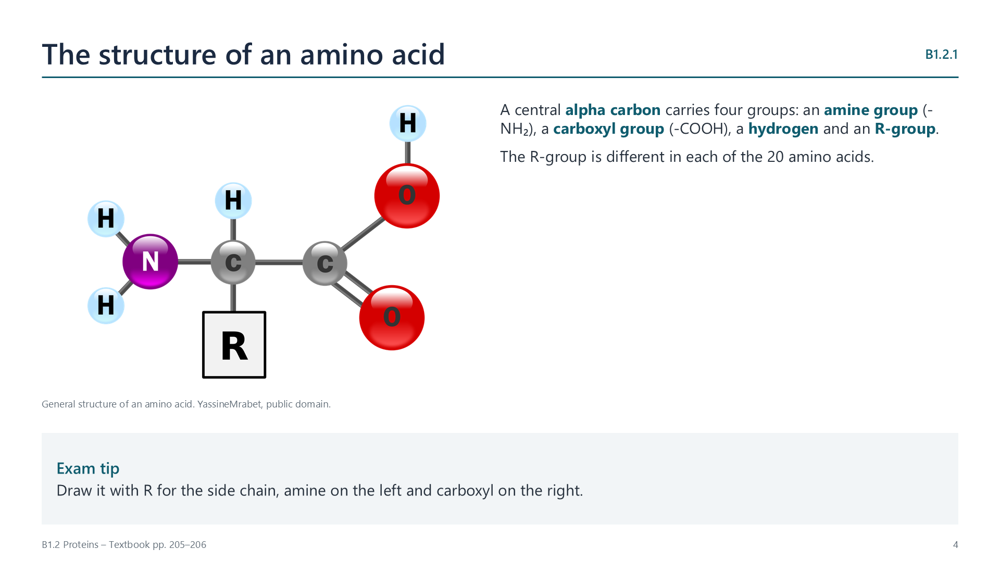
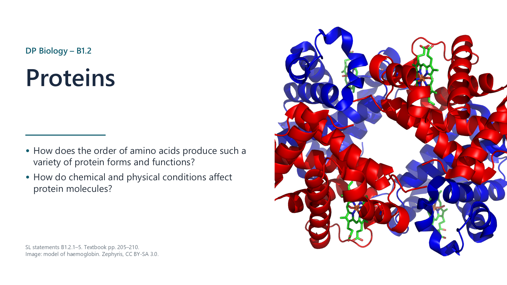
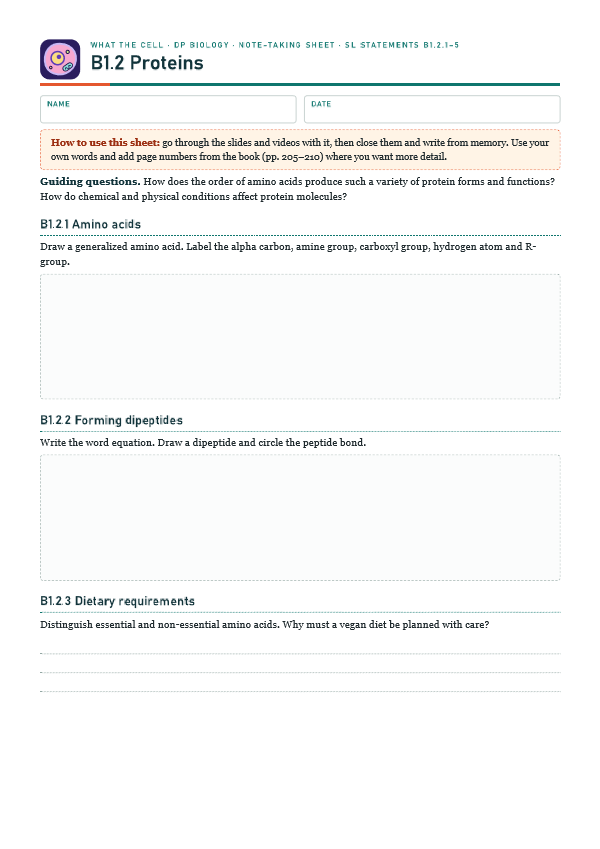
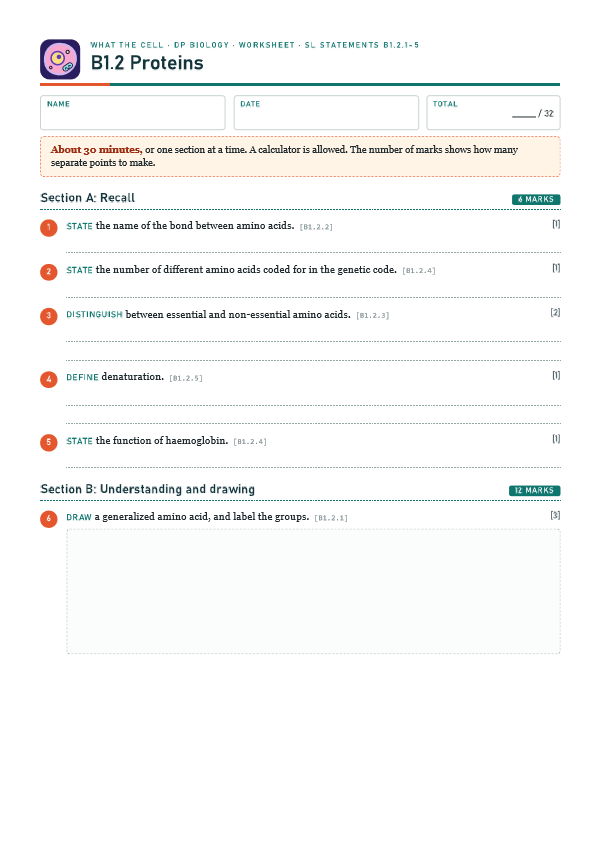

The structure of an amino acid
pp. 205–210Four groups are attached to the alpha carbon: an amine group, a carboxyl group, a hydrogen atom and an R-group. Only the R-group differs between amino acids.


Written for this site from the class slides. The chapter is on pages 205–210 of the course textbook. Image credits are on slide 15.
Four groups are attached to the alpha carbon: an amine group, a carboxyl group, a hydrogen atom and an R-group. Only the R-group differs between amino acids.

amino acid + amino acid → dipeptide + water. The -OH from a carboxyl group and an -H from an amine group form water, and a peptide bond links the two. Repeating this adds amino acids to make a polypeptide.
Watch out: a protein contains one or more polypeptides, folded into a working shape.
Essential amino acids cannot be made, and must come from food. Non-essential ones can be made from other amino acids. Vegan diets need attention, to ensure that all the essential amino acids are included.
There are 20 amino acids in the genetic code. They can be in any order, and chains can have from a few to thousands of amino acids. A chain of 3 can have 8000 sequences, and one of 6 can have 64 million.
| Protein | Function |
|---|---|
| Haemoglobin | Carries oxygen in red blood cells |
| Immunoglobulin | Antibody that binds to antigens |
| Rhodopsin | Pigment in the retina, absorbs light |
| Collagen | Rope-like strength in skin and tendons |
| Insulin | Hormone that lowers blood glucose |
The shape of a protein is held by weak bonds and interactions between R-groups. Heat makes molecules vibrate, and this breaks those bonds. A change in pH alters charges on R-groups, and this breaks attractions. Either can cause denaturation: the shape changes, usually permanently, and the protein loses its function.
Watch out: denaturation does not break peptide bonds, so the sequence stays the same.
Select a video to play it here. Select it again to close it.
Print this guide and complete it as you work through the slides and videos. It asks for your own explanations, so close the notes while you try each section.

The self-check needs JavaScript to run.
A printable worksheet covering all five statements, from quick recall to drawings, data and a longer answer. It has 32 marks and takes about 30 minutes, or you can do one section at a time.
Your teacher has the mark scheme.

You will need: Egg white, test tubes, water bath at several temperatures, vinegar, sodium hydrogen carbonate solution
Safety: Eye protection. Take care with hot water. Do not taste. Check for egg allergies.
Carry this out with your teacher's supervision and follow your school's lab rules.
Frederick Sanger's sequencing of insulin in the 1950s showed that every protein has a precise order of amino acids.
Before sequencing, some doubted that proteins had a defined order. Consider how methods decide which questions can be answered.
Summarised in our own words. Use each code to find the exact wording in your textbook or the IB subject guide.
© 2026 Akash Parthi Bendran. Please ask before using or sharing any resources from this site: see permission to use.